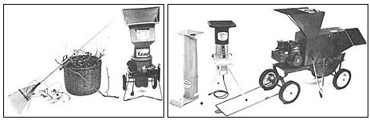
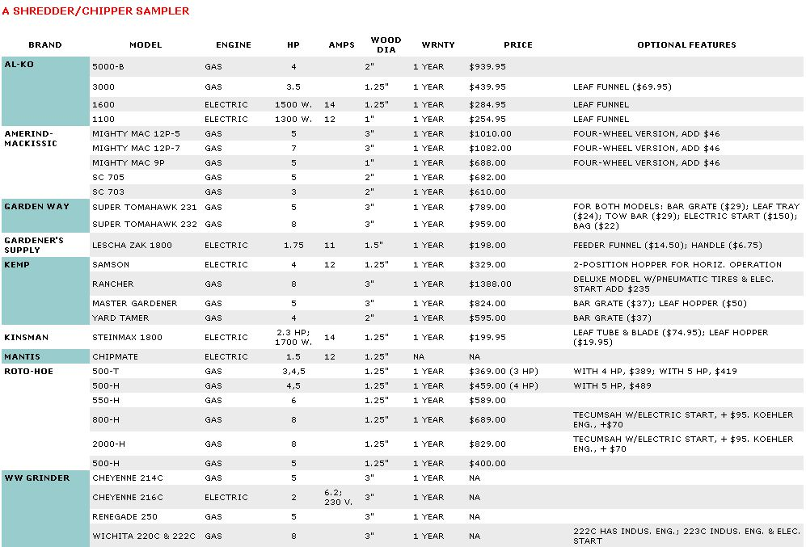

A good shredder/chipper can turn scrap brush and garden waste into great compost or mulch.
An ominous crack! during a gusty thunderstorm last week warned me that I'd have some work to do when the rain stopped. Sure enough, when the skies cleared, I saw that one-third of a 60-year-old Baldwin apple tree had toppled and now lay blocking the driveway. A couple of hours with a chain saw restored access, but then the rest of the cleanup loomed. I'd forgotten just how many branches an apple tree has!
In just a few hours more, though, all that trash wood was neatly lining a path in my garden, shredded and chipped into a fragrant wood mulch. The hero was a shredder/chipper/grinder, a multipurpose garden tool that turns outdoor calamities into horticultural silk purses.
Garden shredder/chippers are very versatile implements. I've used ours to shred leaves and green garden scraps for quick compost as well as to reduce our autumn leaves to a compact, finely ground material that rapidly mellows to superb leaf mold. And there's no better way of getting rid of cornstalks and other tough harvest wastes than by grinding them into a well-shredded mulch. (I've learned from bitter experience, though, that some materials just aren't appropriate for shredding. Bittersweet, for one; ivy, for another. I spent a whole summer rooting out a new patch of bittersweet before I learned not to shred that invasive grower.)
Commercial shredder/chippers fall into two basic categories: electric-powered and gasoline-powered. Basically, the electric units are ideal for smaller properties. They're light, quiet, and capable of chopping up most garden or yard trash. They do require a heavy-duty extension cord - no less than 14-gauge wire, and 12-gauge is better - and a circuit with a slow-blow fuse, since at start-up they can momentarily draw as much as 40 amps. Some electric shredder/chippers are less prone to blowing fuses than others. (The Kemp Samson model does particularly well in this regard.)
If your needs are modest but you've got a large property, you might want to look at the smaller gas-powered models. There's a voltage drop on long runs of extension cords, and some of the electrical models don't do well on the end of a 200-foot cord. People with really large properties and lots of trees and brush to contend with will need a 5- or 8-hp gas-powered shredder.
There are a few safety rules that are absolutely essential when you're using a shredder/chipper. Always make sure that the unit is turned off (and can't accidentally be turned back on) before you attempt to clear a jam. Wear eye protection and gloves when you're feeding material into a shredder/ chipper. (All of them have some sort of antikickback device, but why take a chance?) And finally, never reach into the feed tube or hopper to guide a piece of material; use a pusher stick instead. Observe these precautions and you can "process" backyard trash into great garden fixings!
|
 (PHOTOGRAPH BY MARTHA STANITZ) (LEFT TO RIGHT) KEMP SAMPSON, KINSMAN , KEMP MASTER GARDENER |
 |
|